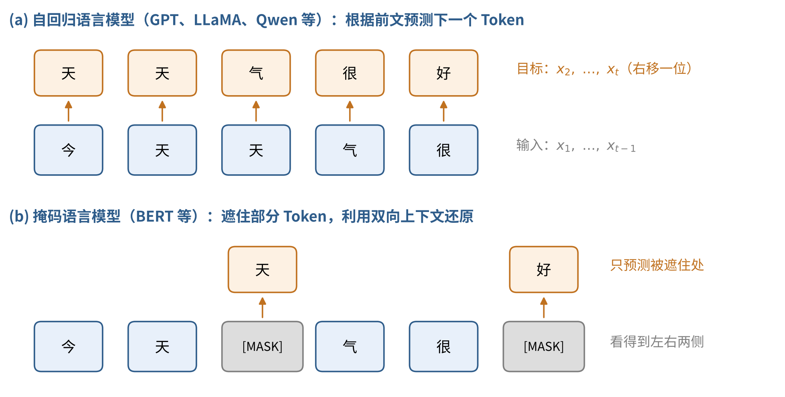
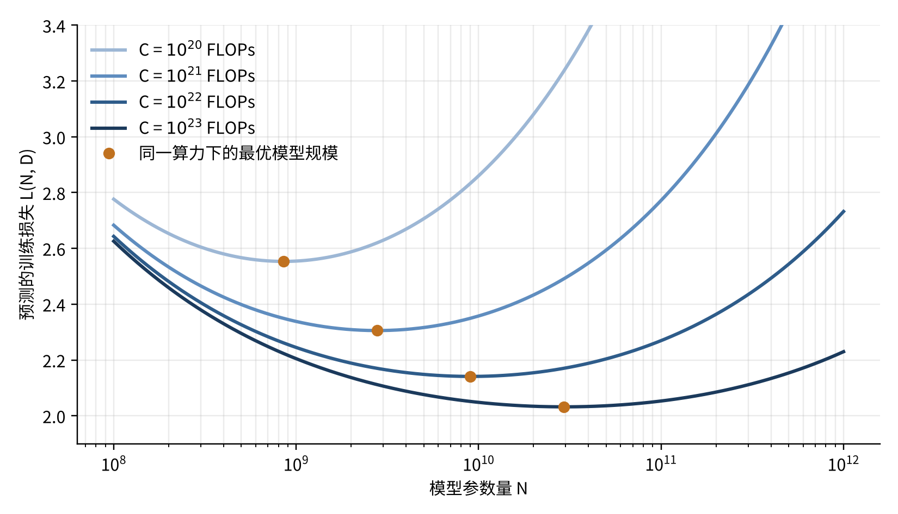

3.2 大语言模型预训练基础
3.2.1 什么是预训练
预训练是指搭建大规模神经网络，在海量数据上以某种自监督的方法进行训练，从而得到一套通用模型参数的过程。它有两个最显著的特点：训练所用的数据量足够大，模型的参数规模足够大。
从机器学习的角度看，预训练属于迁移学习（Transfer Learning）的范畴。在传统做法中，每一个任务都要准备一套标注数据、从随机初始化的参数开始训练一个专用模型：
一个任务 → 一套标注数据 → 一个专用模型
而在预训练范式下，模型参数不再随机初始化，而是先在大量低成本获取的通用数据上学习其中的共性，得到一套”预先训练好”的参数，再以此为起点，迁移到具体任务上进一步训练：
海量通用数据 → 预训练基础模型 → 微调适配多个下游任务
这一范式在自然语言处理领域的成功始于 2018 年前后的 GPT 和 BERT，并在此后的 GPT-3、LLaMA、Qwen、DeepSeek 等模型中被推向了前所未有的规模。
3.2.2 为什么需要预训练
预训练之所以成为大语言模型的基础，主要源于以下几个原因。
（1）标注数据稀缺，无标注数据丰富。 在许多任务中，高质量的标注数据昂贵且难以获取：一条医疗问答的标注可能需要专业医生花费数分钟。相比之下，互联网上的无标注文本几乎取之不尽。预训练提供了一种利用无标注数据的方法，让模型先从中学到通用能力，再用少量标注数据完成特定任务。
（2）任务需要先验知识。 很多语言任务需要模型具备语言结构、语法规则和世界常识等先验知识。例如，要判断”他把杯子放在桌子上，然后它碎了”中的”它”指什么，模型需要知道杯子比桌子更容易碎。这类知识很难从某个任务的小规模标注数据中学到，却广泛蕴含在海量文本之中。
（3）不同任务之间存在共性。 文本分类、情感分析、机器翻译、问答等任务表面上各不相同，底层却都依赖相同的语义理解能力。预训练模型可以作为这些任务共享的”地基”，避免每个任务都从零学习一遍语言。
由此带来的好处也很直接：模型对未见数据的泛化能力更强；下游任务所需的训练时间和标注数据量大幅减少；预训练参数作为良好的初始值提高了训练效率；同一个基础模型可以支持多种任务，并在这些任务上取得比从零训练更好的效果。
3.2.3 自监督学��
预训练之所以能够利用无标注数据，依赖的是自监督学习（Self-supervised Learning）。它的核心思想是：不需要人工提供标签，而是从数据本身构造训练目标。
以句子”今天天气很好”为例。如果把最后一个字遮住，得到”今天天气很__“，那么被遮住的”好”就自然成为这条样本的标签。一段长度为 \(T\) 的文本，可以按这种方式构造出 \(T - 1\) 个”根据前文预测下一个字”的训练样本，完全不需要人工参与。正是这一点，使得用万亿级 Token 训练模型成为可能。
需要注意，自监督学习并不等于”没有监督信号”，只是监督信号来自数据自身，而非人工标注。从训练机制上看，它和监督学习一样计算预测与标签之间的损失，并通过梯度下降优化参数。
3.2.4 预训练目标
不同的大模型采用了不同的自监督目标，最典型的是自回归语言建模和掩码语言建模，二者的区别如图 3-2 所示。

图3-2 两种典型的预训练目标
1．自回归语言模型
自回归语言模型（Autoregressive Language Model）把一段文本的联合概率按从左到右的顺序分解为一系列条件概率的乘积：
\(P\left( x_{1},x_{2},\ldots,x_{T} \right) = \prod_{t = 1}^{T}P\left( x_{t} \mid x_{1},\ldots,x_{t - 1} \right)\quad\) (3-1)
其中 \(x_{t}\) 表示第 \(t\) 个 Token。模型的任务就是根据前面的所有 Token 预测下一个 Token。训练时，模型希望真实文本出现的概率尽可能大，等价于最小化负对数似然损失：
\(\mathcal{L}_{AR}(\theta) = - \frac{1}{T}\sum_{t = 1}^{T}\log P_{\theta}\left( x_{t} \mid x_{< t} \right)\quad\) (3-2)
式中 \(\theta\) 为模型参数，\(x_{< t}\) 是 \(x_{1},\ldots,x_{t - 1}\) 的简写。这一损失本质上是模型预测分布与真实下一个 Token 之间的交叉熵（Cross Entropy）。
为了保证模型在预测第 \(t\) 个位置时”看不到答案”，解码器结构使用因果掩码（Causal Mask），使每个位置只能关注它左侧的 Token。得益于这种掩码，一个长度为 \(T\) 的序列只需一次前向计算，就能同时得到全部 \(T\) 个位置的预测和损失，训练效率很高。GPT 系列、LLaMA、Qwen、DeepSeek 等生成式大模型都采用这一目标。
2．掩码语言模型
掩码语言模型（Masked Language Model，MLM）随机选取输入中一定比例的 Token（BERT 中为 15%），将其替换为特殊符号 [MASK]，然后让模型根据左右两侧的上下文还原被遮住的内容：
\(\mathcal{L}_{MLM}(\theta) = - \sum_{i \in \mathcal{M}}^{}\log P_{\theta}\left( x_{i} \mid \widetilde{\mathbf{x}} \right)\quad\) (3-3)
其中 \(\mathcal{M}\) 是被遮盖位置的集合，\(\widetilde{\mathbf{x}}\) 是遮盖后的输入序列。由于能够同时利用左右两侧的上下文，MLM 训练出的编码器模型（如 BERT）在文本分类、实体识别等理解类任务上表现出色，但它不擅长从左到右地生成长文本。
3．序列到序列的去噪目标
编码器—解码器结构的模型（如 T5）常采用片段破坏（Span Corruption）目标：随机遮盖输入中的若干连续片段，由编码器读入破坏后的文本，再由解码器依次生成被遮盖的片段。它兼具双向理解和生成能力，在翻译、摘要等任务上应用广泛。
为什么生成式大模型普遍选择自回归目标？ 首先，它与生成任务天然一致，训练时怎样预测，推理时就怎样生成；其次，每个 Token 都提供一个训练信号，数据利用率高；最后，大量实践表明，在足够大的规模下，“预测下一个 Token”这一简单目标能够涌现出问答、翻译、推理等多种能力，而不必为每种任务设计专门的目标。
【思考】 “预测下一个 Token”听起来只是在学习文字接龙，为什么能学到知识和推理能力？一个直观的解释是：要准确预测”中华人民共和国的首都是__“的下一个词，模型必须记住事实；要准确预测一道数学题解答的下一步，模型必须在一定程度上掌握解题规律。预测得越准，模型对数据背后规律的建模就越充分。
3.2.5 预训练的一般过程
一次完整的预训练通常包括以下环节：
- 网络设计：确定模型结构，包括层数（深度）、隐藏层维度（宽度）、注意力头数、位置编码方式、激活函数等。当前主流大模型采用仅解码器（Decoder-only）的 Transformer 结构。
- 数据准备：收集、清洗、去重、配比训练数据，并训练分词器（见 3.3 节）。
- 超参数设定：确定学习率及其调度策略、批量大小、权重衰减强度等，必要时通过小规模实验或自动化搜索确定。
- 模型训练：搭建算力平台，配置分布式训练系统，在成百上千张加速卡上持续训练数周乃至数月（见 3.4 节）。
- 评估与迭代：在训练过程中持续监测损失曲线和下游基准测试的表现，及时发现并处理训练不稳定等问题。
预训练完成之后，模型通常还要经过微调、对齐，以及知识蒸馏（用大模型的输出指导小模型训练）、量化、剪枝等压缩与优化手段，才能以合适的成本部署。这些内容将在本章后续各节展开。
3.2.6 规模定律：模型多大、数据多少才合适
既然预训练的特点是”数据多、模型大”，一个自然的问题是：给定一笔算力预算，应该训练多大的模型，又该用多少数据？规模定律（Scaling Law）回答了这个问题。
1．损失随规模呈幂律下降
2020 年，Kaplan 等人通过大量实验发现，在其他因素不构成瓶颈时，语言模型的测试损失 \(L\) 与参数量 \(N\)、训练数据量 \(D\)（以 Token 计）以及训练算力 \(C\) 之间分别近似满足幂律关系：
\(L(N) \approx \left( \frac{N_{c}}{N} \right)^{\alpha_{N}},\quad\quad L(D) \approx \left( \frac{D_{c}}{D} \right)^{\alpha_{D}},\quad\quad L(C) \approx \left( \frac{C_{c}}{C} \right)^{\alpha_{C}}\quad\) (3-4)
其中 \(N_{c}\)、\(D_{c}\)、\(C_{c}\) 为拟合常数，指数 \(\alpha_{N} \approx 0.076\)、\(\alpha_{D} \approx 0.095\)、\(\alpha_{C} \approx 0.050\)。幂律意味着在双对数坐标下，损失与规模呈直线关系：模型、数据、算力每扩大一个数量级，损失就按固定比例下降。这一规律使研发者可以先用小模型做实验，再外推预测大模型的表现，从而降低试错成本。
2．Chinchilla 定律：参数与数据应同步扩大
2022 年，DeepMind 的 Hoffmann 等人在训练 Chinchilla 模型时对这一问题做了更细致的研究。他们把损失写成参数量和数据量的联合函数：
\(L(N,D) = E + \frac{A}{N^{\alpha}} + \frac{B}{D^{\beta}}\quad\) (3-5)
其中 \(E\) 表示数据本身固有的、无法消除的损失；第二项反映模型容量不足带来的损失；第三项反映训练数据不足带来的损失。训练算力与参数量、数据量之间近似满足 \(C \approx 6ND\)（推导见 3.4.5 节）。在 \(C\) 固定的约束下最小化 \(L(N,D)\)，即可得到最优的模型规模。
图 3-3 按式（3-5）绘制了不同算力预算下损失随模型规模变化的曲线（拟合参数采用 Besiroglu 等人 2024 年对 Chinchilla 结果的复现）。每条曲线都呈”U”形：模型太小，容量不够；模型太大，在算力固定时能”喂”的数据又太少。曲线的最低点就是该算力下的最优配置。

图3-3 固定算力下的最优模型规模（按 Chinchilla 规模定律绘制）
Chinchilla 的核心结论是：在计算最优（compute-optimal）的意义下，参数量和训练 Token 数应当大致按相同比例增长，经验上每个参数约对应 20 个训练 Token。 按这一标准，参数量为 1750 亿、仅用 3000 亿 Token 训练的 GPT-3 是明显”训练不足”的。作为验证，Hoffmann 等人用与 2800 亿参数的 Gopher 相同的算力，训练了只有 700 亿参数、但使用 1.4 万亿 Token 的 Chinchilla，结果后者在大多数任务上都超过了前者。
3．规模定律之外的考量
规模定律给出的是”训练成本最优”的方案，而实际工程还要考虑推理成本。一个模型训练一次，却要被调用无数次，因此许多开源模型选择”小模型、多数据”的策略，让模型远远超出 Chinchilla 比例地多训练。例如，LLaMA-7B 使用了 1 万亿 Token，每参数约 150 个 Token，之后的开源模型更是普遍使用了数万亿 Token。这样做的训练成本高于计算最优方案，但得到的小模型推理更便宜、部署更容易。
【小结】 规模定律告诉我们：大模型的能力提升并非偶然，而是可以从模型规模、数据规模和算力投入中较为准确地预测的。但它也提醒我们，“更大”并不总是”更好”，参数和数据的平衡、训练成本与推理成本的平衡，同样重要。